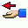
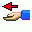

Fõablak
Ezzel az ablakkal indul a program, innen nyithatod meg a többi ablakot, és itt figyelmeztet(het)
a program, ha egy CD a beállítottnál régebben lett kölcsönadva. A gombok (kattints valamelyikre,
ha tudni akarod a jelentését):

 



Ja, a háttérre ne panaszkodjatok, szerintem is jó genyó, de huen tükrözi a program lényegét.